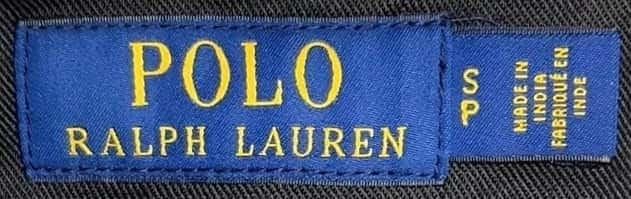
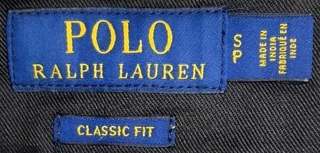
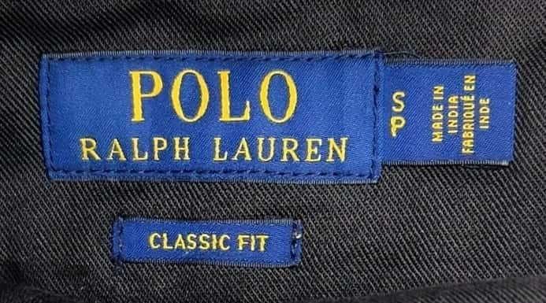
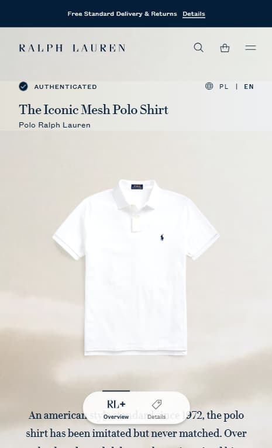
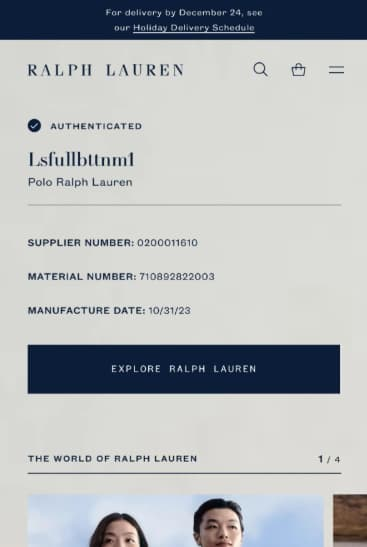
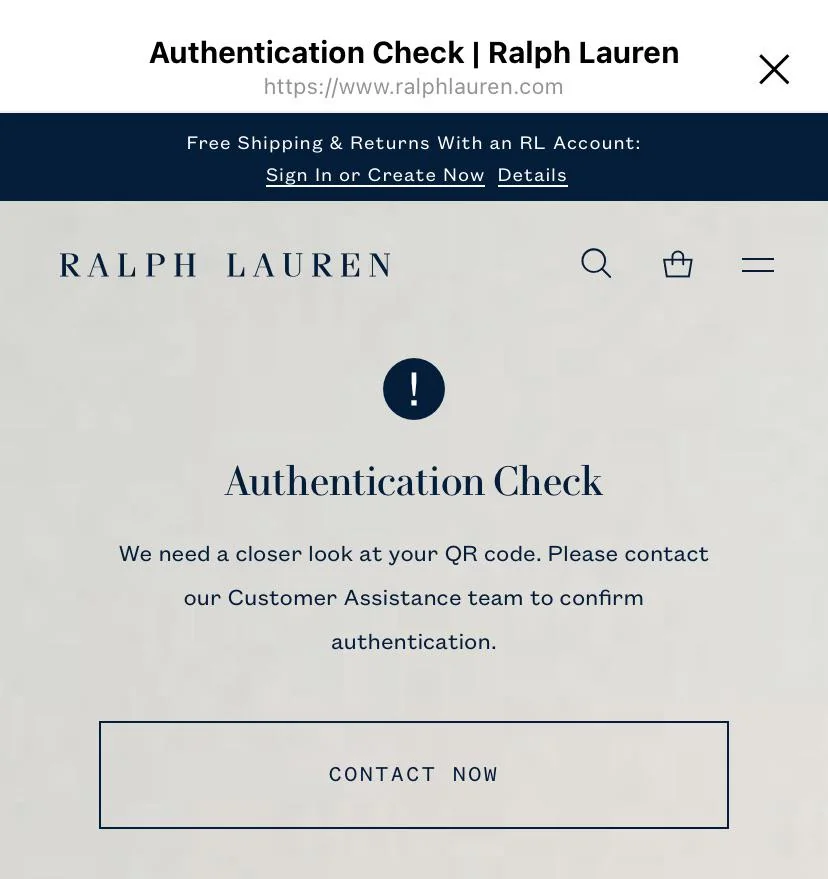
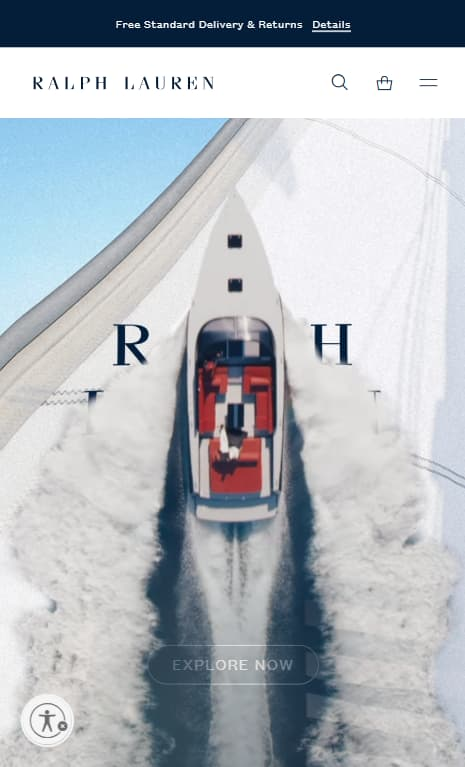

Bigger dataset
866 more photos of tags in the dataset. 10622 more images after augmentation.
Dodaj zdjęcie górnej metki
*Zobacz listę wspieranych metek
lub upuść zdjęcia tutaj
albo wklej z Ctrl+V



Unfortunately, there are not a lot of universal ways of authenticating Ralph Lauren clothes. The tags, ponies, care labels, stitching quality and materials are very different depending on the year of manufacturing, region and category of piece (tags on sweaters are not like the ones on ties), so the telltale signs are very specific. But there are 3 things that you can do to increase your chances:
Most Ralph Lauren clothes that were made after November 2019 have a QR code on the neck label. Scan it with your phone. The QR code should send you to the Ralph Lauren's official authentication page of the piece of clothing that you are legit checking. If the link sends you to the "Authentication Check. We need a closer look at your QR code" page, then it's most likely fake, though there are instances of that page showing even on legitimate Ralph Lauren clothes. It happens with products that are either samples and/or manufactured for internal use - employee merch/gifts or when the QR code is scanned too many times. If the QR code doesn't scan or sends you to any other page, then it's certainly fake. Also, if the QR code scans correctly and sends you to the right page, it doesn't mean that the piece is certainly legit. QR codes can be copied, so it should serve as one of the parts of clothes' authentication process, not a certain answer. But still, QR code gives you about 98+% accuracy, so if you can, you should certainly scan it.




Try finding same pieces online using the photos of the overall garment, embroidery, tags and so on via google lens. You can also try searching them with keywords like "vintage 80s made in korea ralph lauren jacket". After that, compare them to your original piece.
Post on Reddit groups like r/ralphlaurenlegitcheck, r/PoloRalphLaurenLC or RLbigpony; Facebook groups like Polo Ralph Lauren Lifestyle and discord servers like Fashion Reps and similar. Be aware that even Polo Ralph Lauren enthusiasts make mistakes, so the more opinions you get - the better.